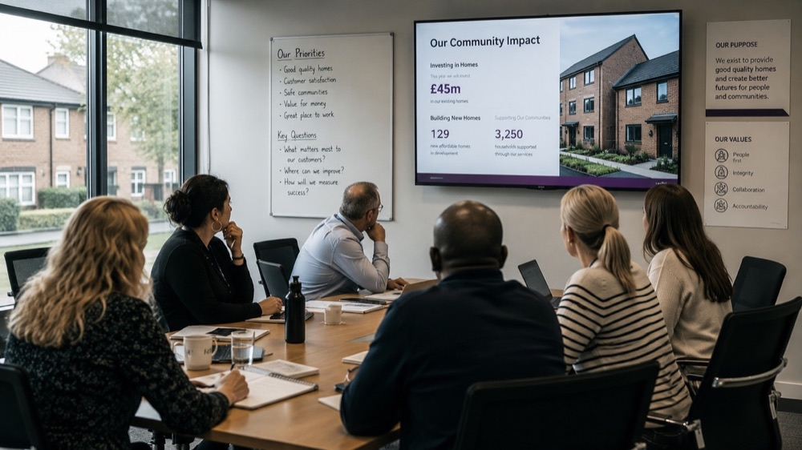
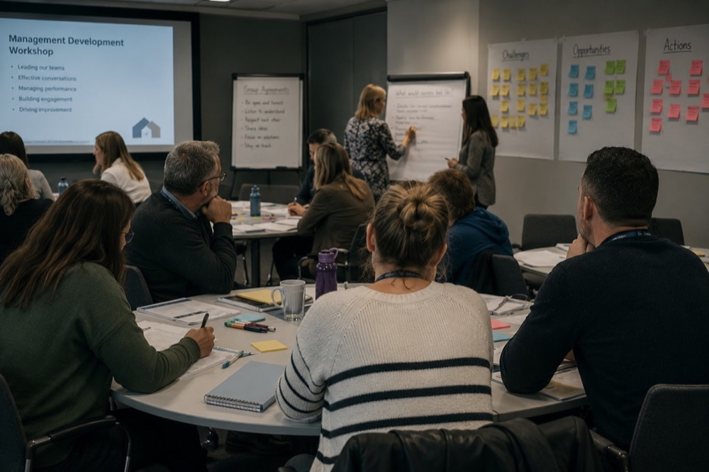

Managers who are ready on day one. Onboarding that doesn't rely on luck.
Specialist support for housing associations, ALMOs and local authority housing teams — covering manager onboarding, leadership development, succession planning and culture that's designed in, not left to chance.
Built for housing providers balancing service, growth and scrutiny.


Capability expertise, applied to how housing actually operates.
Manager & Leadership Onboarding
Structured onboarding for new and promoted managers, so capability doesn't depend on who happened to train them.
Values-Based Induction
Induction that makes culture and service expectations explicit from day one, not assumed through osmosis.
Succession Planning
Identifying and developing the next generation of managers before a vacancy forces a rushed decision.
Culture & Service Standards
Turning unwritten expectations into standards that can be trained to, measured against and held to account.
Workforce Capability Planning
Aligning roles, skills and structure to service demand — particularly through growth, merger or restructuring.
Digital Learning for Distributed Teams
Learning designed for teams spread across sites and neighbourhoods, not assuming everyone sits in one office.
The thinking I bring to every housing engagement.
How capability actually delivers performance.
Our primary framework. Performance is traced from mission down to evidence — when any layer is missing, capability fails, and no amount of training fixes it.
Know where you are. See where to go.
Five stages of capability maturity — from reactive and ad-hoc to measured, optimised and continuously improving.
A proprietary, repeatable method for turning capability problems into measurable performance.
Understand the Mission
Get clear on what the organisation actually needs to achieve, and the standard performance has to meet.
Analyse the Capability Gap
Measure the real distance between current capability and what the mission demands — with evidence, not assumption.
Identify Root Causes
Separate genuine training needs from problems of structure, governance, leadership or process.
Design the Right Intervention
Build the solution that fits the cause — learning where it helps, but also structure, assurance or workforce design.
Measure Impact
Track the outcomes that matter: readiness, performance, compliance, completion and time-to-competence.
Improve Continuously
Feed results back in, so capability keeps improving rather than decaying once the project ends.
Values and expectations have to be designed in — not left to osmosis.
Housing Leadership & Onboarding Transformation
Leadership pathways and values-based onboarding that cut time-to-competence by 20% and lifted consistency of leadership standards.
Structured, evidence-based capability work — grounded in how housing actually operates.
Common questions from housing leadership teams.
Usually not. Inconsistent management is more often a sign that expectations and standards were never written down, not that managers lack skills. The fix is usually structure and clarity, with development layered on top — not a course on its own.
The Housing Leadership & Onboarding Transformation case study cut time-to-competence by 20% — by designing values and expectations into onboarding deliberately, rather than leaving new managers to learn by chance.
Yes. The same capability thinking applies whether you're a large G15 housing association, a smaller regional provider, or an ALMO managing stock on behalf of a local authority.
That's the usual arrangement. I work as a diagnostic and design partner alongside your existing team's capacity, not as a replacement for it.
From housing associations with a few hundred staff to organisations managing tens of thousands of homes. The Capability Readiness Review scales to the size of the problem, not a fixed engagement size.
Need housing leadership or onboarding support?
Tell me what you're facing — onboarding, manager capability or succession. A practical conversation, no sales pitch.